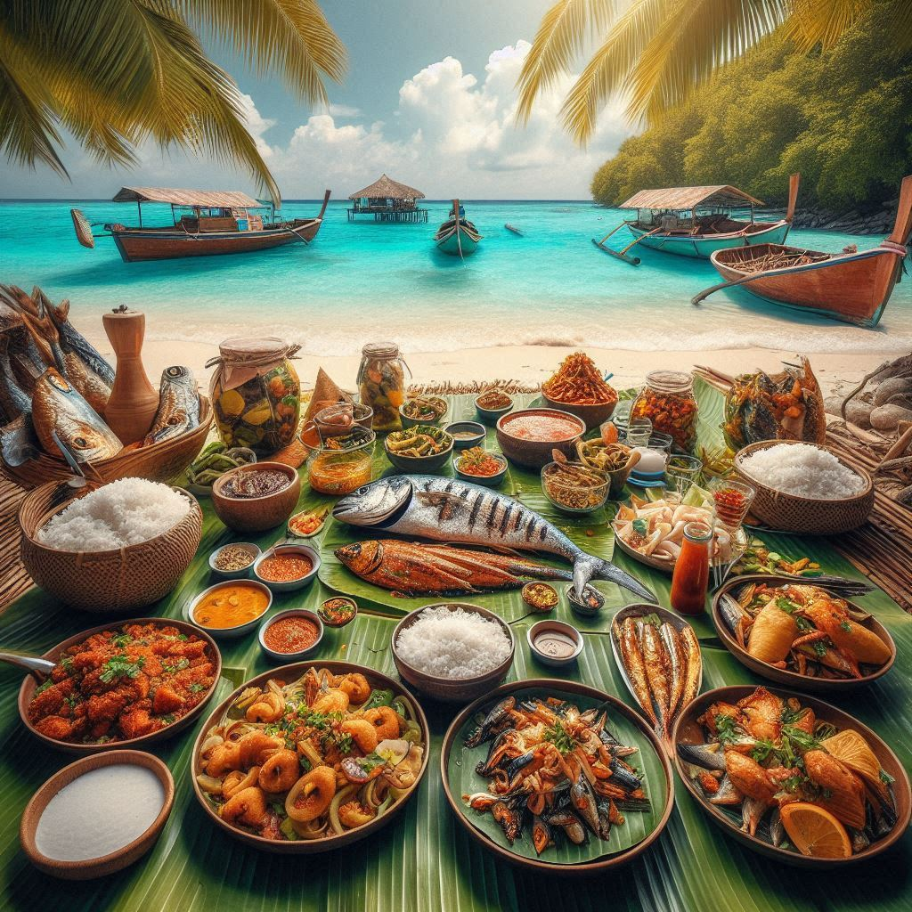
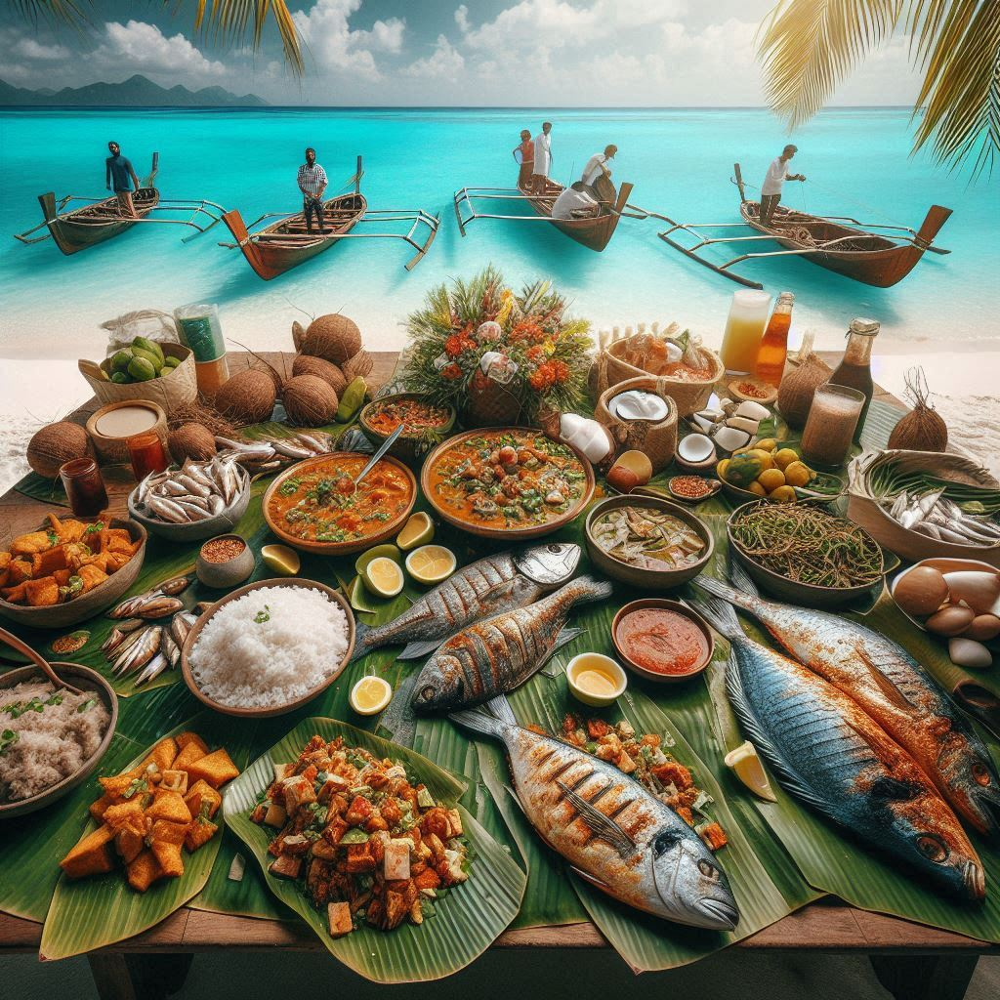

The food of Lakshadweep is predominantly influenced by the region's tropical climate and Islamic traditions. The cuisine is rich in seafood, rice, and coconut, and is characterized by the use of aromatic spices. It is a blend of South Indian, Malabar, and coastal Arabian culinary traditions. Here’s an overview of the staple foods and dishes of Lakshadweep:
1. Seafood
- Fish is the cornerstone of Lakshadweep cuisine, reflecting the island's location in the Indian Ocean. Fresh fish like tuna, mackerel, and tuna are commonly consumed, either fried, curried, or grilled. Fish curry is a staple dish, prepared with fresh coconut milk, curry leaves, and spices.
- Fish Fry: Deep-fried fish is another popular dish, where the fish is marinated with spices like turmeric, chili powder, and ginger, before being shallow or deep-fried.
2. Rice
- Rice is the primary staple food of the people of Lakshadweep. It is commonly served with almost every meal, either as plain rice or in spiced rice dishes. Rice is often paired with fish curry, vegetables, and meat.
3. Coconut
- Coconut is a key ingredient in Lakshadweep cuisine, as it is abundant in the region. Coconut milk is used to make rich gravies and curries, and grated coconut is added to chutneys or used as a topping for various dishes. Coconut oil is commonly used in cooking.
4. Malabar Parotta
- This layered flatbread is a popular accompaniment to curries in Lakshadweep. The Malabar parotta is soft, flaky, and made with refined flour. It is often paired with meat or fish curries.


5. Meat Dishes
- Mutton (goat meat) and chicken are also common, often cooked in spicy gravies. Mutton curry and chicken biryani are popular dishes, especially during festivals and special occasions.
- Biryani: Biryani in Lakshadweep is similar to the Malabar style, made with fragrant rice, meat (usually chicken or mutton), and a blend of spices such as cinnamon, cardamom, and cloves. It's a festive dish, typically enjoyed with raita (a yogurt-based side dish).
6. Vegetables
- Vegetables are often prepared as curries or stir-fries, and include potatoes, beans, carrots, and spinach. These dishes are typically spiced with turmeric, mustard seeds, and curry leaves.
7. Sweets
- Sheer Khurma: A traditional sweet dish made from vermicelli, milk, sugar, and dry fruits, often prepared during festivals such as Eid al-Fitr.
- Kudum Pitha: A sweet made from rice flour, jaggery, and coconut, usually steamed or fried, is another local dessert enjoyed during festivals.
- Payasam: Similar to the kheer of mainland India, payasam is a rice pudding made with milk, sugar, and cardamom. It is often garnished with dry fruits and is a common dish during festive meals.
8. Snacks
- Samosas and kebabs are popular street foods, commonly enjoyed as snacks. Puff pastries filled with spiced meat or vegetables are also frequently made.
- Banana Fritters: Ripe bananas are dipped in batter and deep-fried, creating a crispy snack, especially popular in the evening.
9. Beverages
- Karak Chai (Spiced Tea): Tea is a common beverage in Lakshadweep, often prepared with milk and sweetened with sugar. It is spiced with cardamom and ginger for an extra kick.
- Tender Coconut Water: Due to the tropical climate, tender coconut water is a refreshing, hydrating drink enjoyed by locals and tourists alike.
10. Special Dishes during Festivals
- During religious festivals like Eid al-Fitr and Eid al-Adha, special dishes like biryani, kebabs, Sheer Khurma, and rich meat curries are prepared in large quantities for family gatherings and community celebrations.
The cuisine of Lakshadweep, with its focus on seafood, rice, and coconut, offers a unique blend of flavors and spices that reflect both the natural bounty of the islands and the cultural influences from the broader coastal and Islamic traditions.